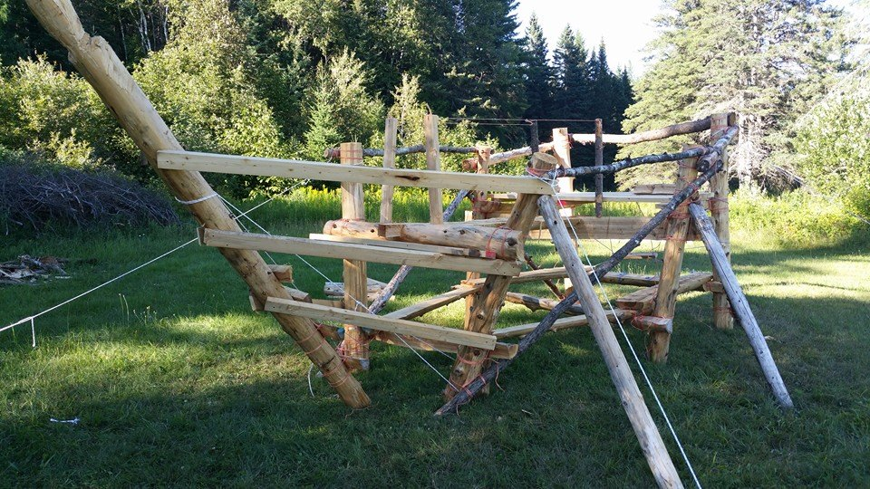

Jeux
Enigme #1 :
Le grand chef pirate demanda un jour à ses matelots d’aller chercher son crochet qu’il avait fait parer des plus belles pierres, chez l’artisan.
«Chef pirate: -Vous souvenez-vous par où il faut passer pour arriver chez l’artisan ?
Premier matelot : Oui grand seigneur, bien, sûr tu peux compter sur moi, je suis le plus grand de tes conseillers. Il faut d’abord passer devant le marchand de fruits, puis devant le grand trois-mâts, puis devant la place publique et enfin devant le Scribe, ensuite, nous sommes arrivés chez l’artisan. »
Chef pirate : -Non, premier matelot, tu as raison sur les endroits, mais tu te trompes sur l’ordre. Tu n’as que deux bonnes réponses.
Deuxième matelot : Moi, je sais Majesté ! Il faut d’abord passer devant la place publique, ensuite le Scribe, ensuite le grand trois-mâts et enfin devant le marchand de fruits. C’est bien ça, n’est-ce pas ?
Chef pirate : Non, pas du tout, deuxième matelot, tu n’as qu’une seule bonne réponse.
Troisième matelot: Moi je sais, Maître ! Il faut d’abord passer devant le marchand de fruits, ensuite devant le Scribe, ensuite devant la place publique et enfin, devant le grand trois-mâts. Je suis sûre à 100% que c’est ça !
Chef pirate : Non, Troisième matelot, tu te trompes à 100%. Tu n’as aucune bonne réponse ! Et toi Petit prisonnier, j’espère que tu connais la bonne réponse, au moins … »
Le petit prisonnier a très bien écouté les matelots du grand chef pirate et connaît maintenant, grâce à leurs réponses, l’ordre exact du trajet.
Et toi, as-tu réussi à le deviner aussi ?
Énigme #2
Quatre amérindiens sont devant la tente du grand chef Œil-du-Ranard. Pourtant, la tente est grande ouverte et le tomahawk de la paix n’est plus à l’intérieur. Les amérindiens savent que c’est nécessairement l’un d’entre eux qui a subtilisé le tomahawk pour le revendre ou qui sait ! Tout ce qu’on sait, c’est qu’un seul d’entre eux dira la vérité si on les interroge. Voici ce qu’ils disent :
Jacques dit Aye-Aye : Ce n’est pas moi, je le jure sur tous les dieux !
Pierre dit le guetteur: C’est Gilles qui a fait le coup, j’en suis sure !
Gilles dit le Chasseur: J’ai toujours eu un doute sur Jacques ! C’est surement lui.
Thierry dit Thierry: Ce n’est clairement pas Jacques qui a fait le coup ! J’ai trop confiance en lui.
Sauras-tu trouver le coupable ?
Énigme #3
L’organisateur de la grande fête annuelle du Village se voit bien embêté. Le Chef des amérindiens veut avoir une fête grandiose pour son anniversaire, mais l’organisateur se retrouve dans une improbabilité incroyable !
Avant-hier, on faisant ses calculs, l’organisateur a vu que le chef avait 28 ans. Par contre MALHEUR ! L’an prochain, il en aura 30. Il n’arrive pas à s’expliquer pourquoi cela ne fonctionne pas.
L’organisateur est certain qu’il a fait une erreur, pourtant le Chef affirme que ce l’organisateur a déjà calculé est vrai. Comment se fait-il que le Chef ait raison ?
Énigme #4
Qui-suis-je ?
Celui qui le fabrique le vend cher.
Celui qui l’achète ne s’en sert pas.
Celui qui s’en sert ne le sait pas.
Énigme #5
Mon premier est un oiseau voleur
Mon deuxième est la femelle d’un rongeur jugé répugnant
Mon troisième est l’action de rire.
Et mon tout désigne est pratiqué sur mer par des marins appelés pirates.